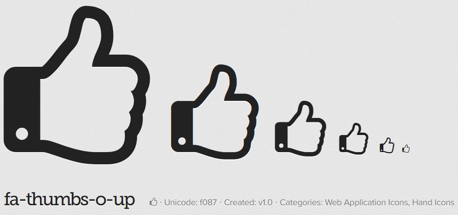
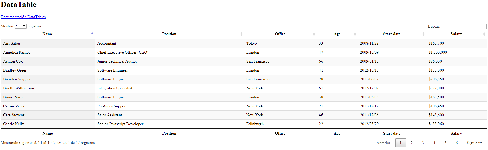

Bootstrap 3.3.7
Iconos:
Para la sección Iconos "Glyphicon" es más recomendable usar FontAwesome 4.7
Tablas:
Para la sección de Tablas usaremos DataTables.
Thumbnails:
Foto Lionel Messi

Foto Xavi Hernández

Foto Andrés Iniesta


Carles Puyol
Carles Puyol i Saforcada (Puebla de Segur, Lérida, 13 de abril de 1978), conocido futbolísticamente como Puyol, es un exfutbolista español. Jugaba en la posición de defensa central y su único equipo durante su carrera fue el F. C. Barcelona, de la Primera División de España, del que fue capitán desde la temporada 2004/05. Además trabajó como parte del Área de Dirección Deportiva de Fútbol del F. C. Barcelona, cargo al cual renunció el 5 de enero de 2015.
Foto Carles Puyol
Foto Sergio Busquets

Foto Pep Guardiola

Modal:
Bootstrap grid:
Sistema de posicionado de 12 columnas: